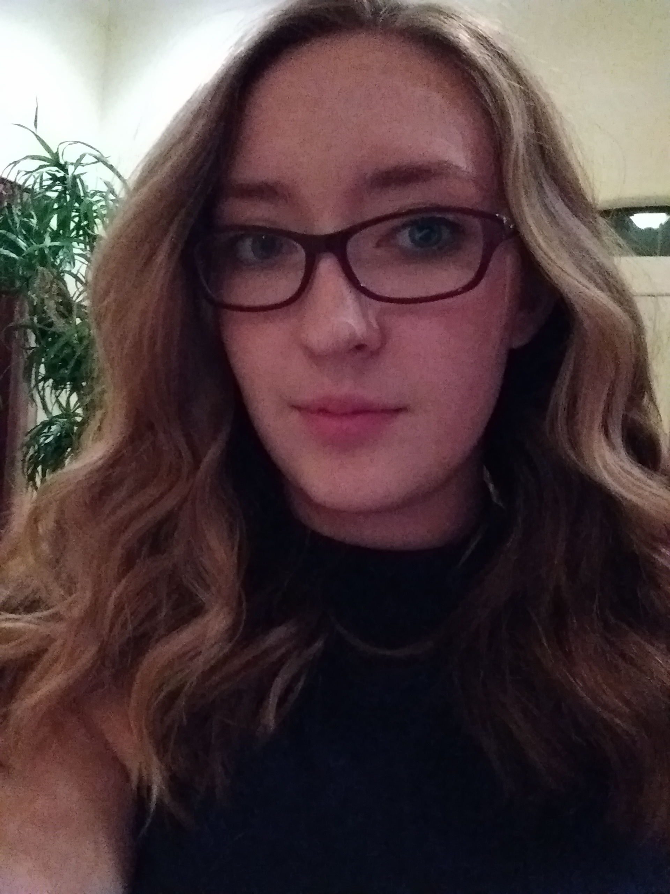

Hello! Thank you for checking out my website. I programmed it
using HTML and CSS.
I am Angela Kearns.
I am a currently an undergraduate student at New Mexico State University. I am double majoring in
Mathematics and Computer Science. For more information about my work as a
student please click on the Education tab on the left.
I am also actively involved in an outreach organization at my university called Young Women in Computer (YWiC).
For more information on this please check out the Work Experience tab to the left.
Thank you again for perusing my website. You will also find my contact information is
available by clicking the link to the left. Please feel free to contact me with any
questions or information or any feedback on my website.
